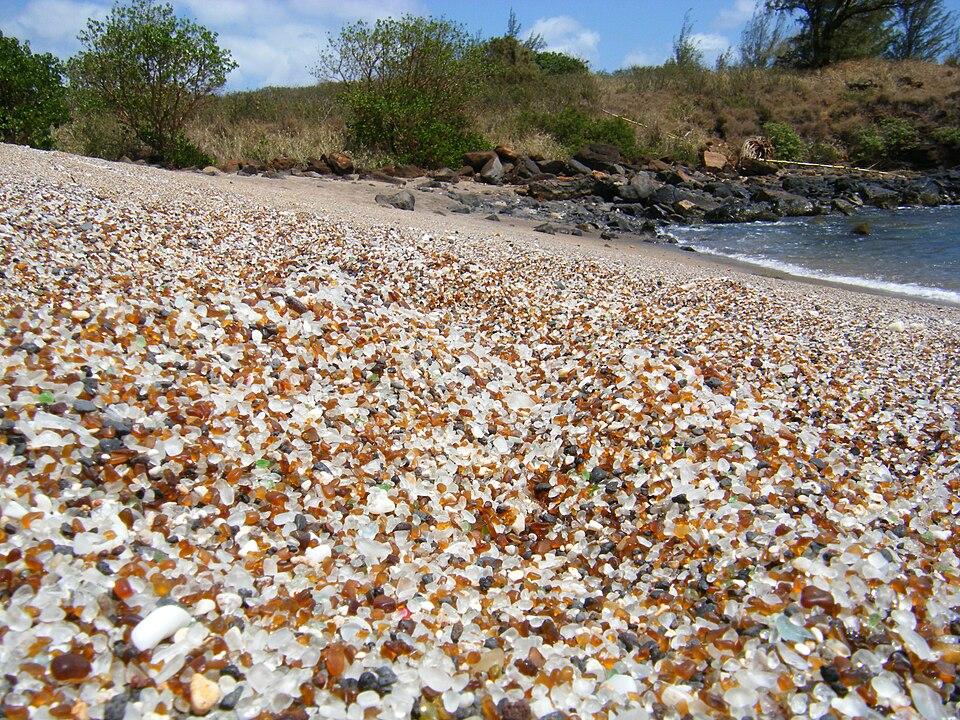

Glass Beach
Place: Glass Beach, ʻEleʻele, Kauaʻi
Type: Beach / former dump site / geological attraction
Story it tells: A former plantation-era dump transformed by decades of wave action into a shoreline covered with colorful sea glass, illustrating how industry, time, and nature reshaped one of Kauaʻi's most unusual beaches.

Glass Beach sits along the industrial shoreline of ʻEleʻele, just west of Port Allen Harbor. Unlike Hawaiʻi's famous white or black sand beaches, this small cove became known for millions of smooth pieces of sea glass covering the shoreline. The colorful fragments—mostly clear, brown, green, and blue, were created by nature and decades of human activity.
From roughly the late 1940s until 1967, the shoreline served as an open-air dump for the surrounding industrial community, including refuse generated by the McBryde Sugar Company, Port Allen Harbor, nearby businesses, and local residents. Before modern landfills and environmental regulations, disposing of waste along the coast was common practice throughout Hawaiʻi.
After the dump closed, the sun and ocean gradually broke apart discarded bottles and glass containers. Over several decades, the sharp fragments were tumbled against volcanic rock until they became the smooth, frosted sea glass that now covers portions of the beach. Souvenir collecting and heavy visitation have noticeably reduced the quantity of glass compared with earlier decades.
Glass Beach also reflects changing attitudes toward environmental stewardship. Rather than being remediated through a cleanup program, the abandoned dump was largely left to weather naturally after its closure. Organic materials decomposed, metals corroded, and the remaining glass slowly became chemically stable as it was polished by salt water and surf. Today, the surrounding area remains industrial, however, the shoreline has become an unexpected example of nature reclaiming and redefining a human-made landscape.
Today, Glass Beach attracts photographers, beachcombers, and curious visitors. Hawaiian monk seals occasionally rest along the shoreline, reminding visitors that even an area once defined by industrial waste has become part of the island's living coastal ecosystem. Glass Beach stands as both a geological curiosity and a reminder of how dramatically Hawaiʻi's relationship with waste management and environmental conservation has changed.